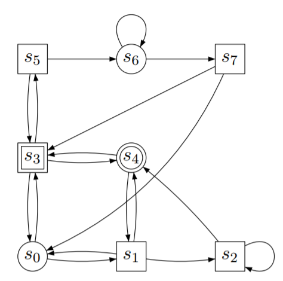

IGLSynth: Automatic Strategy Synthesis Library¶
IGLSynth is a high-level Python API for solving Infinite Games and Logic-based strategy Synthesis. It provides an easy interface to
- Define two-player games-on-graphs.
- Assign tasks to players using formal logic.
- Write solvers to compute winning strategies in the game.
IGLSynth consists of 4 modules,
game: Defines classes representing deterministic/stochastic and concurrent/turn-based games as well as hypergames.logic: Defines classes representing formal logic such as Propositional Logic, Linear Temporal Logic etc.solver: Defines solvers for different games such as ZielonkaSolver etc.util: Defines commonly used classes such as Graph.
Installation¶
IGLSynth can be easily installed on Linux/Mac/Windows using Docker by running the following command in terminal in Linux (or equivalent for other OS).
docker pull abhibp1993/iglsynth
The above docker image has the latest version of IGLSynth installed along with its dependencies. There are two ways of developing projects using IGLSynth,
1. Mount the project directory to docker container (Docker Docs for Mounting Volumes). An example usage is as follows,
docker run -it -v /location/of/project/project_name:/home/project_name abhibp1993/iglsynth cd /home/project_name python3 project_name/file_to_run.py
2. Configure docker image as remote interpreter (PyCharm: Configure Remote Interpreter).
Getting Started¶
Consider the reachability game from EPFL Slides. shown in the figure below,
{kind=link}
To solve this game, first create a Graph object to represent the
vertices and edges in above figure.
from iglsynth.game.game import *
from iglsynth.solver import ZielonkaSolver
# Instantiate graph
graph = Graph()
# Add vertices to graph
vertices = graph.add_vertices(num=8)
# Add edges to graph
edge_list = [(0, 1), (0, 3), (1, 0), (1, 2), (1, 4), (2, 4), (2, 2), (3, 0), (3, 4), (3, 5), (4, 3),
(5, 3), (5, 6), (6, 6), (6, 7), (7, 0), (7, 3)]
edges = list(graph.add_edges(edges=edge_list))
Now, mark the vertices with turn of the players, then mark vertices 3, 4 as final vertices and
add action labels to edges.
# Create vertex property to maintain set of final vertices
graph.add_vertex_property(name="is_final", of_type="bool", default=False)
# Set the value of property for final vertices
graph.set_vertex_property(name="is_final", vid=3, value=True)
graph.set_vertex_property(name="is_final", vid=4, value=True)
# Create a vertex property "turn" to annotate vertices with turn of players
graph.add_vertex_property(name="turn", of_type="int")
# Set value of turn property for player 1
for vid in [0, 4, 6]:
graph.set_vertex_property(name="turn", vid=vid, value=1)
# Set value of turn property for player 2
for vid in [1, 2, 3, 5, 7]:
graph.set_vertex_property(name="turn", vid=vid, value=2)
# Create action as an edge property. Let index of action in edge_list be the action label.
graph.add_edge_property(name="act", of_type="int")
# Set the value of property for all edges
for idx in range(len(edge_list)):
graph.set_edge_property(name="act", edge=edges[idx], value=idx)
This defines the graph structure as required. Next, create a Game object to define
a deterministic two-player game that can be passed to a solver.
# Instantiate a turn-based game
game = Game(kind=TURN_BASED)
# Define the game
game.define(graph=graph)
Finally, select an appropriate solver to solve the game. We will use
ZielonkaSolver to solve
the reachability game.
# Instantiate a solver
solver = ZielonkaSolver(game=game)
# Configure the solver to only compute winning regions, and not strategies
solver.configure(win1=True, win2=True)
# Run the solver
solver.run()
The solution of solver can be accessed by accessing the properties.
win1 = solver.win1 # Winning region for player 1 (Circle)
win2 = solver.win2 # Winning region for player 2 (Square)
For defining and solving more complex games or hypergames, refer to the API documentation and examples (to be added soon).